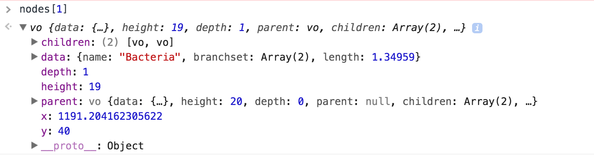

Nodes now have meta information. Data object is wrapped in data attribute.
We can draw curves in SVG with the <path> element.
d3.curve offers many options for drawing complex curves.
Source: http://bl.ocks.org/d3indepth/raw/b6d4845973089bc1012dec1674d3aff8/
Source: https://bl.ocks.org/d3noob/1ea51d03775b9650e8dfd03474e202fe